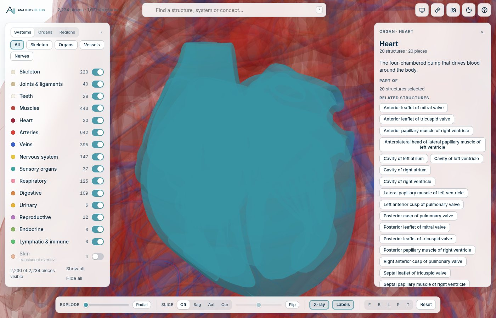

Explore the Human Body. Understand Medicine.
Anatomy Nexus connects interactive 3D anatomy with physiology, symptoms, conditions, medical tests, imaging, procedures, medications and learning. Every page names the organs and structures it concerns, so you can move from a symptom to the anatomy behind it, to the condition, the test and the treatment.
Try the heart, chest pain, ECG, MRI, statins or CPR.

Start from the body
Popular pages
A few of the most-asked-about entities, each written to the same template: what it is, where it sits, why it matters, what it connects to, how to explore it further and which sources support it.
Then follow the links into medicine
Every clinical page names the organs and structures it concerns, so a knee pain page leads to the femur, tibia and menisci in 3D, to osteoarthritis, to the X-ray and MRI that show it, to knee replacement and to the painkillers used.